材料
※粉量を変えると自動計算されます
生地
フィリング
作り方
生地
STEP 1
ホームベーカリーで生地を作る
ホームベーカリーに材料をセットし「生地コース」で生地を作ります。コースが終わったら、次の作業に進みます。
ホームベーカリーに材料をセットし「生地コース」で生地を作ります。コースが終わったら、次の作業に進みます。
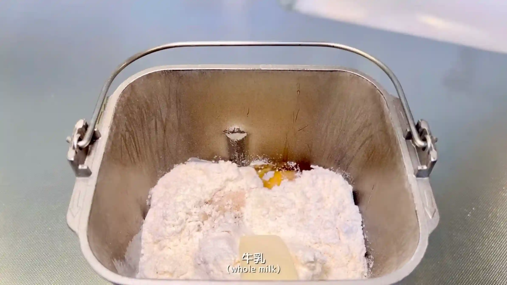
STEP 2
フィリングを作る
STEP 3
生地を取り出し、5分割して丸める
生地を5等分し、それぞれ表面がなめらかになるように軽く丸めます。
生地を5等分し、それぞれ表面がなめらかになるように軽く丸めます。
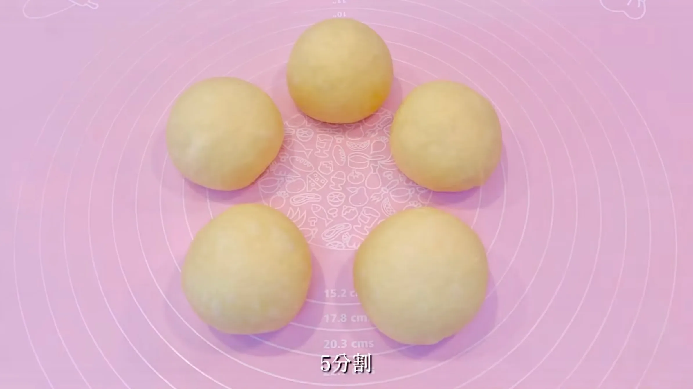
STEP 4
室温で15分おく
乾燥しないようにラップをして、生地を休ませます。こうすることで生地がゆるみ、次の工程で伸ばしやすくなります。
乾燥しないようにラップをして、生地を休ませます。こうすることで生地がゆるみ、次の工程で伸ばしやすくなります。
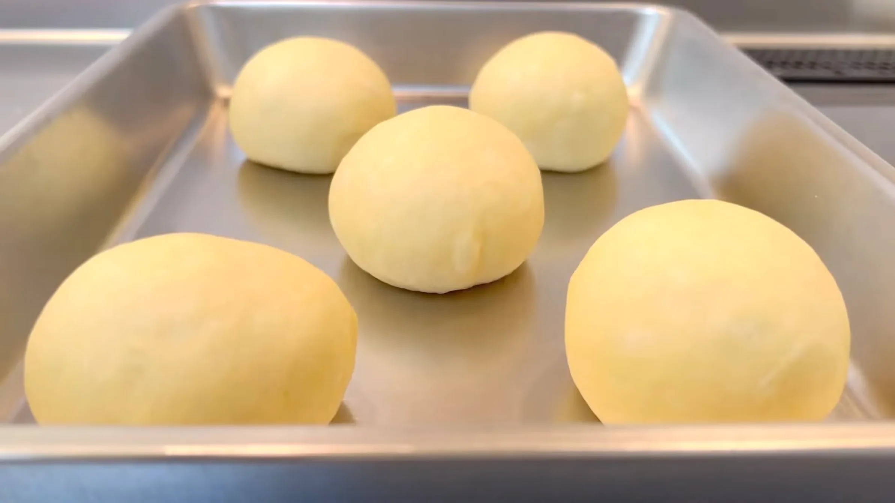
STEP 5
生地を20㎝の円形に伸ばす
生地を中央から外側へ向かって少しずつ伸ばし、20cmほどの円形に整えます。5枚の大きさをそろえておくと、重ねたときに形が整いやすくなります。
生地を中央から外側へ向かって少しずつ伸ばし、20cmほどの円形に整えます。5枚の大きさをそろえておくと、重ねたときに形が整いやすくなります。
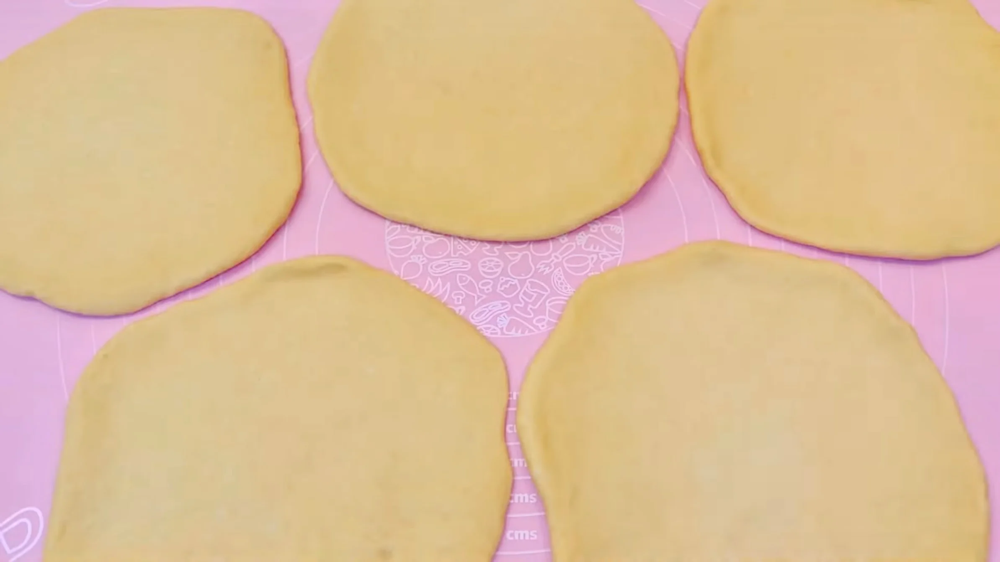
STEP 6
オーブンシートの上で生地とフィリングを重ねる
生地とフィリングを交互に重ね、最後に生地を重ねます。オーブンシートの上で作業しておくと、この後の成形時にそのまま天板へ移せるため、形を崩しにくくなります。
生地とフィリングを交互に重ね、最後に生地を重ねます。オーブンシートの上で作業しておくと、この後の成形時にそのまま天板へ移せるため、形を崩しにくくなります。
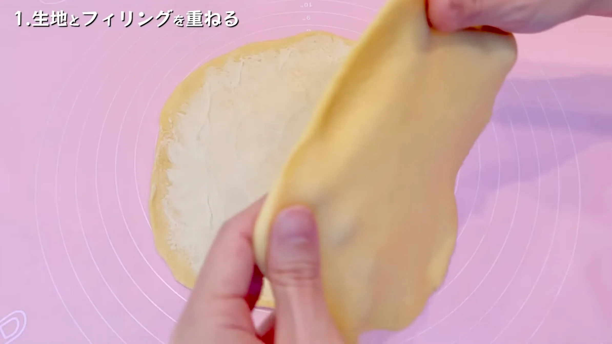
STEP 7
8等分に切れ目を入れる（[動画 03:15]）
重ねた生地を8等分する位置に、外側の端を残して切れ目を入れます。切れ目をできるだけ均等に入れると、星形の形が整いやすくなります。
重ねた生地を8等分する位置に、外側の端を残して切れ目を入れます。切れ目をできるだけ均等に入れると、星形の形が整いやすくなります。
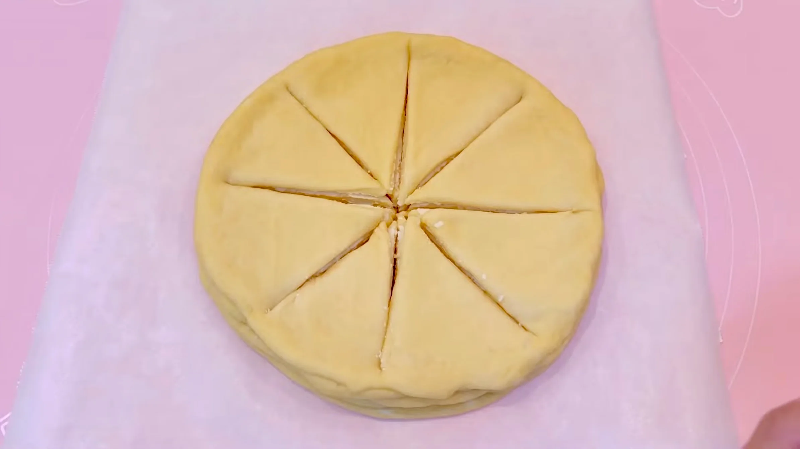
STEP 8
さらに切れ目を入れる（[動画 03:33]）
先ほどの切れ目の間にさらに切れ目を入れます。このとき、外側の端と中央部分は切らずにつなげたままにしておきます。生地に厚みがあって切りにくいですが、下の生地までしっかり切れ込みを入れておくのがポイントです。
先ほどの切れ目の間にさらに切れ目を入れます。このとき、外側の端と中央部分は切らずにつなげたままにしておきます。生地に厚みがあって切りにくいですが、下の生地までしっかり切れ込みを入れておくのがポイントです。
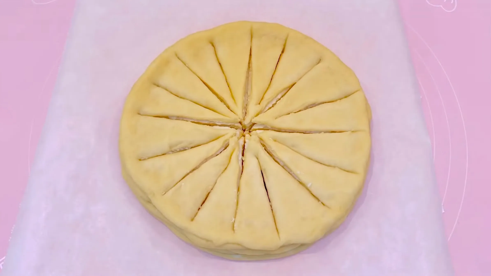
STEP 9
生地をねじる（[動画 05:03]）
切れ目を入れた生地を下からくぐらせ、中央につながった部分を外側へ持ってきます。生地を無理に引っ張らず、形を崩さないようにやさしく動かします。
切れ目を入れた生地を下からくぐらせ、中央につながった部分を外側へ持ってきます。生地を無理に引っ張らず、形を崩さないようにやさしく動かします。
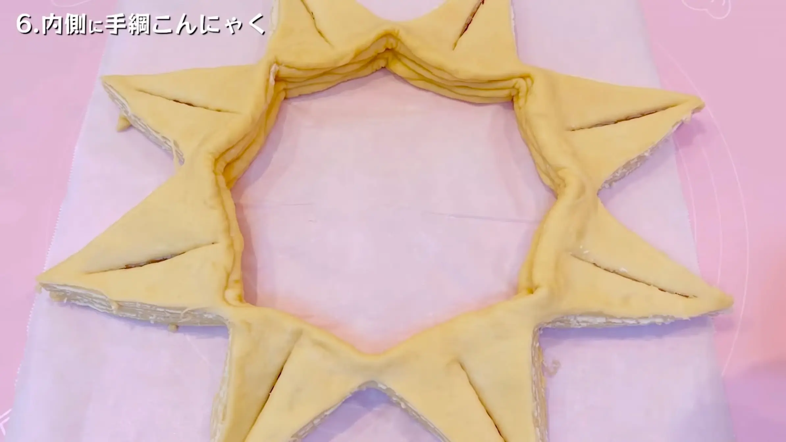
STEP 10
さらに生地をねじる（[動画 05:36]）
生地を手綱こんにゃくのようにねじりながら、先端部分を中央へ戻します。このとき、角や生地の層がきれいに見えるように形を整えるのがポイントです。
生地を手綱こんにゃくのようにねじりながら、先端部分を中央へ戻します。このとき、角や生地の層がきれいに見えるように形を整えるのがポイントです。
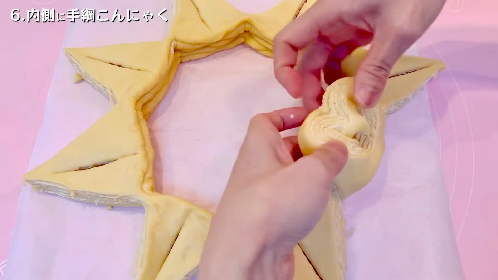
STEP 11
生地を天板に移し、室温で60分おく
乾燥しないようにラップをかけ、成形した生地を二次発酵させます。発酵時間は室温によって変わるため、60分を目安に、生地がふっくらと膨らんだら次の工程へ進みます。
乾燥しないようにラップをかけ、成形した生地を二次発酵させます。発酵時間は室温によって変わるため、60分を目安に、生地がふっくらと膨らんだら次の工程へ進みます。
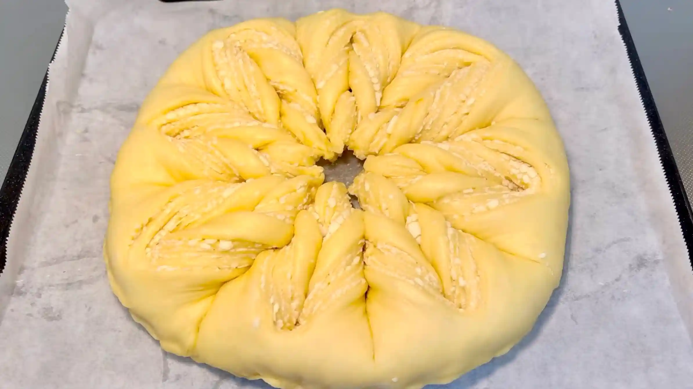
STEP 12
オーブン180℃で30分焼く
表面がきつね色になるまで焼きます。焼き時間は目安とし、表面の焼き色を確認しながら、ご家庭のオーブンに合わせて調整してください。
表面がきつね色になるまで焼きます。焼き時間は目安とし、表面の焼き色を確認しながら、ご家庭のオーブンに合わせて調整してください。
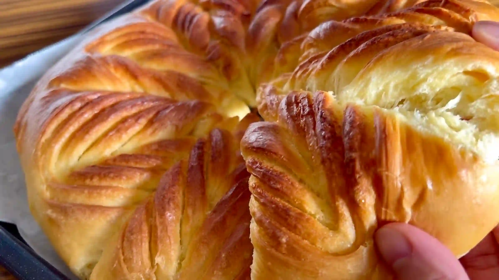
フィリング
STEP 1
ホワイトチョコとバターをレンジで加熱する
ホワイトチョコとバターを耐熱容器に入れ、少しずつ加熱します。一度に長く加熱するとホワイトチョコが焦げたり分離したりしやすいため、15秒ずつ様子を見ながら加熱し、なめらかになるまで混ぜ合わせます。
ホワイトチョコとバターを耐熱容器に入れ、少しずつ加熱します。一度に長く加熱するとホワイトチョコが焦げたり分離したりしやすいため、15秒ずつ様子を見ながら加熱し、なめらかになるまで混ぜ合わせます。
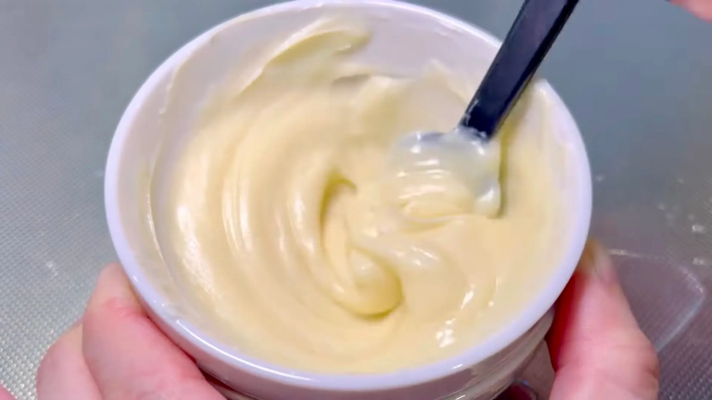
動画でチェック
おいしく作るためのワンポイントコラム
こんにちは、おなおドーナツです！
今回は、美しい星模様の『スターブレッド』を作っていきます！生地を重ねたりねじったりして作る、成形がとても楽しいレシピです。おいしく、そして美しく仕上げるポイントを2つにまとめました。
① 生地作りのコツ
今回は、牛乳、卵、バターを配合したリッチなブリオッシュ生地で作ります。牛乳に含まれるカルシウム、そして卵白に含まれるタンパク質の効果で、水だけで仕込むよりも歯切れの良いしっかりとした生地が出来上がります。これによって、成形時に生地のダレを防ぎ、綺麗なエッジを保ちやすくなります。また、ほんのり甘くコクのある生地はフィリングとの相性も抜群です！
② 成形のコツ
円形に伸ばした5枚の生地の間に、フィリングを交互に重ねていきますが、ここで中の空気を抜くように生地を重ねていくのがポイント。ここで生地とフィリングをしっかり密着させることで、美しい層を作り出すことができます。また、生地をねじって星形を作る際、層を表面に見せ、エッジを出すように意識するのがコツ！二次発酵後は生地が柔らかくなり、焼く前に形を整えることは難しいため、成形時にしっかりと模様を綺麗に見せておくことが大切です。もし成形の途中で生地が緩くなってきたら、一度30分程冷蔵すると作業しやすくなります。その際は、生地が冷えているため二次発酵の時間を長めにとるのがおすすめです。
皆さんもぜひ、この華やかな成形に挑戦してみませんか？それでは、おうちパン作りの時間を一緒に満喫しましょう！
今回は、美しい星模様の『スターブレッド』を作っていきます！生地を重ねたりねじったりして作る、成形がとても楽しいレシピです。おいしく、そして美しく仕上げるポイントを2つにまとめました。
① 生地作りのコツ
今回は、牛乳、卵、バターを配合したリッチなブリオッシュ生地で作ります。牛乳に含まれるカルシウム、そして卵白に含まれるタンパク質の効果で、水だけで仕込むよりも歯切れの良いしっかりとした生地が出来上がります。これによって、成形時に生地のダレを防ぎ、綺麗なエッジを保ちやすくなります。また、ほんのり甘くコクのある生地はフィリングとの相性も抜群です！
② 成形のコツ
円形に伸ばした5枚の生地の間に、フィリングを交互に重ねていきますが、ここで中の空気を抜くように生地を重ねていくのがポイント。ここで生地とフィリングをしっかり密着させることで、美しい層を作り出すことができます。また、生地をねじって星形を作る際、層を表面に見せ、エッジを出すように意識するのがコツ！二次発酵後は生地が柔らかくなり、焼く前に形を整えることは難しいため、成形時にしっかりと模様を綺麗に見せておくことが大切です。もし成形の途中で生地が緩くなってきたら、一度30分程冷蔵すると作業しやすくなります。その際は、生地が冷えているため二次発酵の時間を長めにとるのがおすすめです。
皆さんもぜひ、この華やかな成形に挑戦してみませんか？それでは、おうちパン作りの時間を一緒に満喫しましょう！


今回は、海外のホリデーシーズンでも大人気の華やかな星模様に焼き上げる「スターブレッド」をご紹介します！リッチな生地とホワイトチョコフィリングを重ねて作る、素敵な成形のレシピです。
コラムでは「生地作りのコツ」「成形のコツ」の2つのポイントをご紹介します。